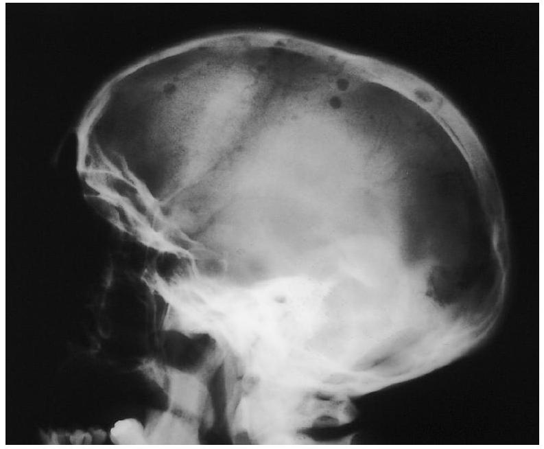
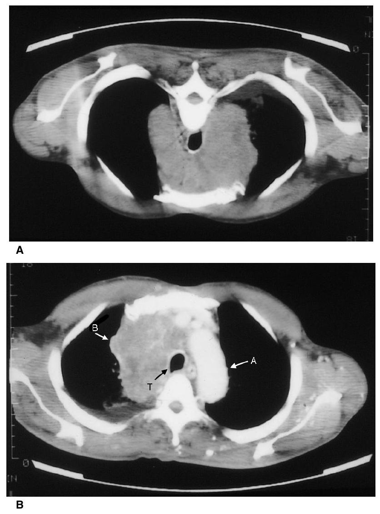

Hypocalcaemia causes prolongation of the prothrombin time
The prothrombin time is a sensitive test of hepatocellular dysfunction
The activated partial thromboplastin time (APTT) is prolonged by unfractionated heparin therapy
The effect of heparin is reversed by vitamin K
Deep venous thrombosis can be reliably diagnosed by measuring fibrin degradation products (FDPs)
In a patient with severe thrombocytopenia:
Rectal bleeding is usually the first symptom
Examination of the optic fundi should be performed regularly
There is a risk of cerebral haemorrhage
Corticosteroids are given to prevent haemorrhage, whatever the cause
Platelet transfusions can be expected to cause prompt normalisation of the platelet count
The following may cause a microcytic anaemia:
Sickle cell disease
The thalassaemias
Anaemia of chronic disease
Anticonvulsant therapy
Haemolysis, whatever the cause
In lymphoma:
If a newly presenting patient has generalised lymphadenopathy, the diagnosis is more likely to be non-Hodgkin's lymphoma than Hodgkin's disease
Early stages of Hodgkin's disease can be cured by radiotherapy alone
Lymphocyte predominance is a favourable histological sign in Hodgkin's disease
Pain in lymph nodes after alcohol is very typical of non-Hodgkin's lymphoma
Bone marrow transplantation has greatly improved the prognosis of low-grade nonHodgkin's lymphoma
The following statements are true:
A neutrophil count of only $0.8 \times 10^{9}$ cells $/ 1$ is a major risk for infection
A neutrophil count in a febrile patient of $25 \times 10^{9}$ cells/l reflects mostly the production of new neutrophils from the bone marrow
In a patient with less than $0.1 \times 10^{9}$ cells $/ 1$ neutrophils and a fever, treatment with antibiotics should await the results of blood culture
Neutropenia is common in AIDS
Neutropenia can be caused by carbimazole therapy
Case history questions
Case history 1
Your consultant is concerned that a 73-year-old man in atrial fibrillation is at risk of stroke and asks you to anticoagulate him. You are aware that the patient is vaguely confused and the nursing staff on the ward have received a telephone call from a neighbour stating that he has become increasingly reclusive. He has often been noted to be unsteady on his feet and has once been found lying in the road. At visiting time you have a chance to meet his wife to discuss the plan to use anticoagulation therapy and to give further information.
Suggest two important questions which you should ask
Name two haematological investigations which it would be appropriate to perform
Name two possible contraindications to anticoagulation in this case
If a decision were made to proceed with anticoagulation, describe two pieces of advice that you would give to the patient and his wife
Case history 2
You are called on a Sunday to see a 63-year-old man with non-Hodgkin's lymphoma and a fever of $38.6^{\circ} \mathrm{C}$. He is in reverse barrier nursing because his total white cell count is $0.2 \times 10^{9} / \mathrm{I}$ and his platelets are $15 \times 10^{9} / \mathrm{I}$ despite daily platelet transfusions. He received intensive chemotherapy (fludarabine) 15 days previously and has been leukopenic for 7 days. You put on your gown, mask and gloves to examine the patient and find that he has no symptoms except those of the fever, mild headache, sweating and an uncomfortable feeling around his bottom.
Which of the following actions would be appropriate:
Order a chest X-ray
Take a blood culture
Do a blood count
Do a digital rectal examination
Start him on oral amoxycillin
The senior nurse on the ward encourages you to start him on the 'usual' antibiotics (ceftazidime and gentamicin). His fever is still elevated 6 hours later despite antibiotics and he looks more toxic. The consultant suggests that you add metronidazole to his regimen. Four days later you are also on call and are asked to see him again. He has had fever up to $38.3^{\circ} \mathrm{C}$ for 4 days despite ceftazidime, gentamicin, metronidazole and 2 days of vancomycin. He now has a dry cough, in addition to a painful bottom.
What actions should you now take?
Look at his white cell and platelet counts from that morning
Arrange for transfer to an intensive care unit (ITU)
Examine him again carefully
Treat him for a possible fungal infection
Do blood cultures, including a fungal blood culture
On examination, you find crackles at the left base that do not clear on coughing and a black and red perianal area about 2 cm across with surrounding erythema.
Should you:
Speak to his consultant at home
Arrange a chest X-ray
Arrange an induced sputum
Call the physiotherapist in
Arrange for a special mattress to help his developing pressure sore
Give a differential diagnosis and your thoughts on management
Data interpretation
Suggest a cause for the findings described in Table 63 for each of six patients.
Table 63 Data obtained for six patients
A
B
C
D
E
F
Hb ( $\mathrm{g} / \mathrm{dl}$ )
42
78
185
91
87
84
MCV (fl)
123
69
96
85
80
86
WBC ( $\times 10^{9 / \mid \mathrm{l})}$
2.3
13.6
15.3
8.7
63.0
1.7
Platelets ( $\times 10^{9 / \mid}$ )
60
200
600
180
140
48
A 22 -year-old patient is admitted to hospital 48 hours after a paracetamol overdose, complaining of haematuria. The prothrombin time is 60 s (control $18 \mathrm{~s})$. What is the likely diagnosis?
A 70-year-old man is referred to hospital because he is anaemic (Hb $82 \mathrm{~g} / \mathrm{dl}$, MCV 90 fl , platelets $150 \times 10^{9}$ cells/l ESR $130 \mathrm{~mm} / \mathrm{h}$. Name a possible haematological diagnosis. What biochemical tests should be performed?
Picture questions
This skull radiograph (Fig. 68) was taken from a 73-year-old patient who presented in acute renal failure.

Fig. 68 A skull radiograph of a patient in acute renal failure.
What abnormality do you see?
How could the skull radiograph be relevant to the renal failure? Be as precise as you can.
Name one rapid biochemical test which might establish a link.
What would be your immediate management?
A previously fit 28 -year-old woman has lost weight. She has night sweats, pruritus and weight loss. She has noticed pain in the cervical region after drinking alcohol. Her GP arranged a chest radiograph which was thought to show hilar enlargement. Figure 69 shows thoracic computed scans before (a) and after (b) an intravenous contrast agent. T, trachea; A, aortic arch, B, left brachiocephalic vein.

Fig. 69 Thoracic computed tomographic scans before (a) and after (b) an intravenous contrast agent.
What abnormality is shown?
Suggest, in order of likelihood, a differential diagnosis
Viva questions
What complications might you expect in a patient with aplastic anaemia and how would you prevent them?
How would you decide whether to use antiplatelet or anticoagulant therapy?
Extended matched questions
EMQ 1
Theme: Haematological diagnoses
Options:
Hodgkin's disease
Acute lymphoblastic leukaemia
Myelofibrosis
Chronic granulocytic (myeloid) leukaemia
von Willebrand's disease
Iron-deficiency anaemia
Thalassaemia trait
Anaemia of chronic disease
Hereditary spherocytosis
Acute myeloid leukaemia
Pernicious anaemia
Non-Hodgkin's lymphoma
Multiple myeloma
For each of the following patients, select the most likely final diagnosis given the clinical feature(s) (more than one may be correct). Each item can be used once, more than once, or not at all.
An anaemic elderly patient with a palpable spleen has a 'dry tap' on attempted bone marrow aspiration.
A 35-year-old woman with weight loss, fever and pruritis has masses of large lymph nodes only in the neck and axillae.
A 53-year-old man has an increased count of neutrophil leucocytes showing the 'Philadelphia chromosome'.
An otherwise healthy woman with menorrhagia and mild anaemia has a reduced mean red cell volume.
An elderly patient with acute renal failure has severe hypercalcaemia.
EMQ 2
Theme: Drug treatments
Options:
Unfractionated heparin
Dipyridamole
Reteplase
Sinthrone
Aspirin
Warfarin adjusted to achieve an INR $\geq 2$
Intravenous streptokinase
Low-molecular-weight heparin
Intranasal prostacyclin
For each of the following patients not currently on any of the drugs on the list above, select the most appropriate drug (more than one may be correct). Each item can be used once, more than once, or not at all.
A 65 -year-old woman with repeated carotid transient ischaemic attacks (TIAs) who has a $<70 \%$ stenosis of the internal carotid artery and intimal plaque seen on carotid doppler.
A 40-year-old man newly admitted with an acute pulmonary embolism 14 days after fracturing his femur.
A 59-year-old patient admitted to the coronary care unit with unstable angina on no treatment.
A 72 -year-old man with atrial fibrillation and a small stroke, which resolved completely within 5 days, whose echocardiogram shows left atrial thrombus.
An 88-year-old man with early dementia and in atrial fibrillation who is to be discharged to live alone having been admitted after a fall.
Objective structured clinical examination (OSCE)
This is a 5 minute station with a normal volunteer on a couch.
Examiner: This 35-year-old man has been found to have a mediastinal mass and lymphoma is suspected. Please examine him.
After you have examined him:
Examiner: What features of any lymph nodes found on examination would help your differential diagnosis?
Answers
Multiple choice answers
False. This is true in vitro but hypocalcaemia severe enough to have the same effect in vivo would be incompatible with life.
True. Because hepatocellular dysfunction impairs the synthesis of vitamin K-dependent clotting factors.
True. This is used as a measure of heparinisation.
False. Vitamin K reverses the action of warfarin; protamine reverses heparin action.
False. FDPs are raised by massive intravascular fibrin formation, as in disseminated intravascular coagulation (DIC), and may be increased in thrombotic conditions but are not sensitive or specific enough to be a useful diagnostic test. Measurement of D-dimer is sensitive enough to detect venous thrombosis but is not specific.
False. A purpuric rash or easy bruising on the limbs or trunk are more likely first symptoms.
True. The appearance of retinal haemorrhages indicates that the patient is at risk of haemorrhage.
True.
False. Corticosteroids are given to some patients with idiopathic thrombocytopenic purpura but thrombocytopenia is often not steroid responsive.
False. The goal is to prevent bleeding, not to normalise the blood count.
False.
True. Thalassaemia is one of the causes of microcytosis.
True.
False. Anticonvulsants may cause macrocytosis.
False. Haemolysis increases the reticulocyte count which, since reticulocytes are large, causes macrocytosis.
True. In Hodgkin's disease, the lymphadenopathy is often confined to a single site, most commonly the neck, at presentation.
True.
True.
False. Alcohol-related pain is typical of Hodgkin's disease.
False. There is no evidence for this in clinical trials to date.
False. A minor risk. It is when the count falls below $0.5 \times 10^{9}$ cells $/ 1$ and particularly $10^{9}$ cells $/ 1$ that the risk becomes major.
False. Mostly neutrophil release from the marginating pool. The left shift (or band forms) is the proportion of new neutrophils from the marrow.
False. Immediate intravenous broad-spectrum antibiotics are indicated.
True. Especially caused by the drugs zidovudine and ganciclovir.
True. Neutropenia occurs in 1:10 000 patients treated with carbimazole for thyrotoxicosis.
Case history answers
Case history 1
Whilst anticoagulation is indicated to prevent cerebral embolism in patients with atrial fibrillation, you must not initiate it unless you are sure it will be safe. Age, in itself, is not a contraindication, but there are aspects of the history which suggest there are other contraindications. There are strong hints that he may be abusing alcohol. The confusion is worrying because someone who is having falls and becomes confused could have a subdural haematoma, which is an absolute contraindication to anticoagulation. You should ask about:
his alcohol intake
dyspepsia or history of blood loss
his likelihood of taking tablets and attending for anticoagulant monitoring reliably.
You should measure his prothrombin time before starting anticoagulants; autoanticoagulation is common and would affect your choice of loading dose. It would also increase your anxiety about the possibility of alcohol abuse (prolonging the PT by causing hepatocellular damage). You should also check the haemoglobin concentration; anaemia would be a relative contraindication to anticoagulation or should, at least, be investigated before anticoagulation.
These might include
alcohol abuse
dementia (if it would interfere with compliance)
difficulty attending for anticoagulant monitoring
inability of wife or carer to supervise treatment
history of GI bleeding or anaemia
history of cerebral haemorrhage
concomitant drug therapy affecting the stability of warfarin levels
falls.
Advice would include:
avoid alcohol
avoid non-steroidal analgesics and aspirin
report any excessive or unusual bleeding immediately
attend regularly for anticoagulant monitoring.
You should give the patient and his wife an information sheet about anticoagulants, listing drugs to be avoided.
Case history 2
True. This is always appropriate in febrile neutropenia, even in the absence of chest signs or symptoms.
True. Very important.
False. Unnecessary if done that morning, which it will have been to see whether platelet transfusions were required.
False. You must inspect his anal area as he has a symptom there, but a formal rectal examination is not appropriate as it may cause bacteraemia.
False. Not appropriate; i.v. therapy required with broader coverage.
True.
False. He is not that ill and you would take him out of protective isolation. In fact, even if he were so ill and requiring ventilation, neutropenic leukaemic patients do so badly in ITU that it is used rarely.
True. Always true in this group of patients. Especially mouth, chest, skin and rectal area (p. 268).
True. Candidaemia or invasive aspergillosis are now more likely. This group of patients with persistent fever during neutropenia have a $30 \%$ mortality, mostly as a result of fungal infection.
True. It is always worth repeating blood cultures, even though he is on antibiotics, as these patients get breakthrough bacteraemia.
True. Now you have a complex problem with two possible sites of infection.
True. If one was not done that day. A CT scan of his chest is a much better investigation and should be done within the next 24 hours.
False. Not useful in febrile neutropenia (unlike AIDS), although pneumocystis pneumonia is a diagnostic possibility because fludarabine therapy 'paralyses' T cells.
False. As the cough is not productive, of no benefit.
False. His lesion is almost certainly not a pressure sore but a developing infection called icthyma gangrenosum (Pseudomonas aeruginosa).
He probably has two focal infections: one in his lungs and the other perirectally. The perirectal infection is likely to be caused by Pseudomonas aeruginosa, other bacteria including anaerobes, Aspergillus or mucormycosis. His lung disease may be caused by any of these or other bacteria or possibly Pneumocystis. He needs large doses of antifungals (amphotericin), a CT scan of the lung, which is helpful diagnostically, bronchoscopy, with lavage, to obtain material for microscopy and culture, and a biopsy of his rectal lesion, all as soon as possible.
Data interpretation answers
Patient A. This is a fairly typical picture of megaloblastic anaemia caused by vitamin $\mathrm{B}_{12}$ or folate deficiency with severe macrocytosis, leucopenia and thrombocytopenia; hypersegmented neutrophils on the blood film would confirm the diagnosis, as would bone marrow aspiration although this is not done as a routine. Haematinics should be measured.
Patient B. This is a moderately severe microcytic anaemia (the differential diagnosis is given on p. 260). Iron deficiency is the most likely cause. The leucocytosis may be caused by infection or inflammation but could signify acute or subacute blood loss, a possible cause for the iron deficiency.
Patient C. There is erythrocytosis, thrombocytosis and leucocytosis, suggestive of polycythaemia vera. The red cell mass is likely to be increased and splenomegaly may be present.
Patient D. There is a normocytic anaemia with normal white cell and platelet counts. This would be typical of the anaemia of chronic disease (e.g. renal failure) but could also be caused by a mixed deficiency. This would be suggested by an increased: red cell distribution width (RDW) and a 'dimorphic' blood film. You should examine and investigate the patient for an underlying disease.
Patient E. Here, there is a normochromic anaemia with mild thrombocytopenia, but the striking abnormality is the marked leucocytosis; this is typical of a chronic leukaemia. A differential white cell count and blood film would be crucial.
Patient F. This shows moderate pancytopenia and could be seen in a patient with acute leukaemia, hypoplastic anaemia or after chemotherapy (see p. 262 for a fuller list of causes).
Prolongation of the prothrombin time may be caused by warfarin, consumption of clotting factors as in DIC, vitamin K deficiency or deficiency of the vitamin K-dependent clotting factors owing to liver disease. At 48 hours after a massive paracetamol overdose is about the time when hepatocellular damage becomes apparent, and the prothrombin time is quite a sensitive test for this. The likely diagnosis is acute hepatocellular necrosis caused by paracetamol.
An extremely high ESR is usually caused by multiple myeloma, giant cell arteritis or chronic/severe infection/inflammation. This patient also has a moderate normochromic anaemia. Multiple myeloma is a likely diagnosis. Renal failure and hypercalcaemia are common in myeloma. You should measure plasma urea, creatinine and calcium. The definitive diagnosis is made by plasma and urine immunoelectrophoresis, bone marrow examination and skeletal survey.
Picture answers
Figure 68 shows multiple 'punched-out' lesions, in keeping with multiple myeloma or another cause of osteolytic metastases.
Hypercalcaemia is a common cause of acute renal failure in multiple myeloma. Volume depletion is an important and reversible effect of hypercalcaemia. 'Myeloma kidney' may cause renal failure without hypercalcaemia. This is because of tubular damage by the paraprotein, secondary hyperuricaemia, amyloidosis and infection.
With the history given, you should immediately measure serum calcium. You should also arrange serum and urine immunoelectrophoresis to identify a paraprotein but that is not an emergency investigation.
You should assess the patient's volume status, using a central venous pressure line if necessary, and give saline to increase urinary calcium excretion. Corticosteroid and/or bisphosphonate therapy may be needed as second-line treatment for hypercalcaemia.
There is a large soft tissue attenuation mass within the mediastinum abutting the trachea and aortic arch and compressing the superior vena cava (which cannot be seen). This is almost certainly a large lymph node mass.
Although you are not told that she has cervical lymphadenopathy, the scenario makes it very likely that she is describing alcohol-related lymph node pain, which is very specific to Hodgkin's disease. The combination with mediastinal lymphadenopathy makes the diagnosis of Hodgkin's by far the most likely diagnosis. Other causes of a mediastinal soft tissue mass include non-Hodgkin's lymphoma (not associated with alcohol-related pain) or sarcoidosis (the second most likely possibility in this case). Unlikely causes are tuberculosis, retrosternal thyroid (unlikely), thymic tumour, dermoid or lung cancer nodes (especially small cell).
Viva answers
Aplastic anaemia usually affects the red cells, white cells and platelets. Patients are anaemic, thrombocytopenic and neutropenic. The anaemia may be symptomatic; it may precipitate symptoms of coronary, cerebrovascular or peripheral vascular ischaemia and may cause heart failure. Thrombocytopenia may cause purpura, bruising and - in severe cases - mucosal or GI bleeding or cerebral haemorrhage. Neutropenia causes mouth ulceration, perineal infection and susceptibility to opportunistic infection. Anaemia is treated with periodic blood transfusions. Platelet transfusions are given if the patient is severely thrombocytopenic and at risk of haemorrhage. Granulocyte transfusions are relatively ineffective and so the treatment of neutropenia is prophylaxis against infection and aggressive treatment of the earliest signs of it.
The choice of antiplatelet or anticoagulation therapy depends upon the pathophysiology of the disease (see p. 275).
Extended matched answers
EMQ 1
3. The dry tap suggests myelofibrosis and splenomegaly is characteristic.
1. This patient has ' B ' symptoms and pathological lymphadenopathy; the fact that it is in adjacent areas (on only one side of the diaphragm) suggests Hodgkin's disease.
4. The Philadelphia chromosome is pathognomonic of chronic granulocytic leukaemia
6. Either thalassaemia trait or chronic disease could also give a microcytic anaemia, but the clinical details strongly favour iron deficiency
13. Of course there are many causes of renal failure, but the heading makes it clear that you should be making a haematological diagnosis; myeloma is the haematological disease most closely associated with renal failure.
EMQ 2
5. TIAs are caused by platelet emboli so aspirin is the treatment of choice.
8. Fibrinolytic therapy is of no proven value, and may cause him to bleed into the fracture site. He will certainly need to take warfarin but must be treated with heparin first. Clinical trials consistently show low-molecular-weight heparin to be superior to unfractionated heparin so that should be your choice.
8,5. Either aspirin or heparin would be correct, but low-molecular-weight heparin is the better answer.
6 or 4. Unlike carotid TIAs, arterial thromboembolism from cardiac clot should be treated with warfarin (or sinthrone, although it is less commonly used). Depending on your perception of the danger of recurrence, you might give heparin, but medium-to-long term warfarin is the mainstay of preventing recurrence.
5. Warfarin is indicated for preventing cerebral embolism in atrial fibrillation unless there are contraindications. Age, falls and concern about this patient's ability to care for himself are relative contraindications. Depending on likely compliance, you might prescribe aspirin.
Response to OSCE
Do not waffle on about 'taking a history' because your instruction is clear and do not attempt to perform a 'general' physical examination. You must use your knowledge to focus the examination on examining:
all possible sites of lymphadenopathy: the epitrochlear region of the elbow, neck, axillae, and groins
the abdomen for para-aortic nodes (by deep palpation), hepatomegaly and splenomegaly
the conjunctivae for anaemia.
It is reasonable to examine the chest if you have time, but make less of a play of this than the parts of the examination listed above because chest examination may well be normal, and these other features will be much more informative, whether negative or positive.
The character and distribution of the nodes are both important; see page 257.